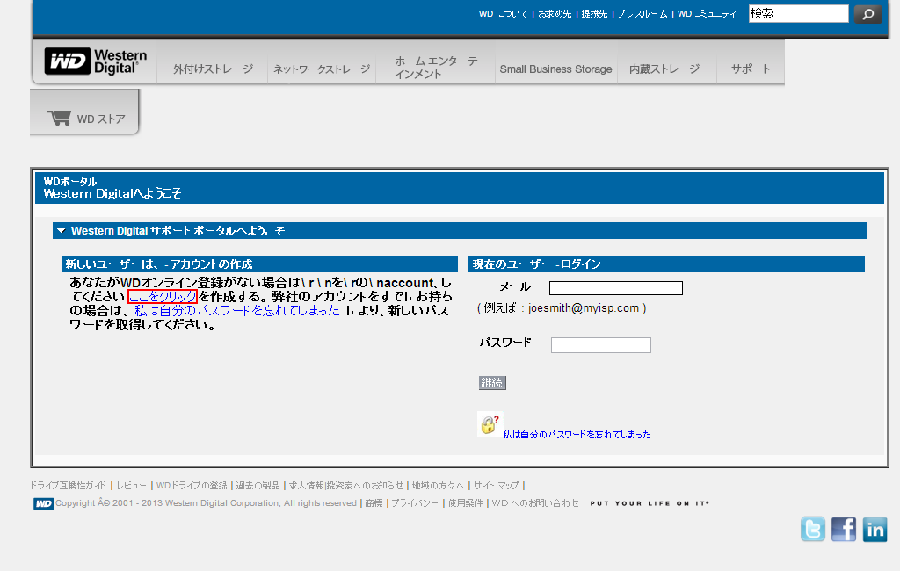
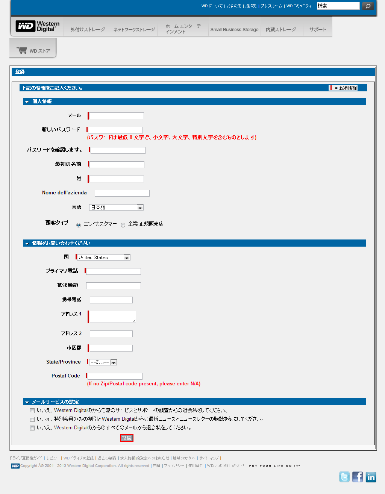
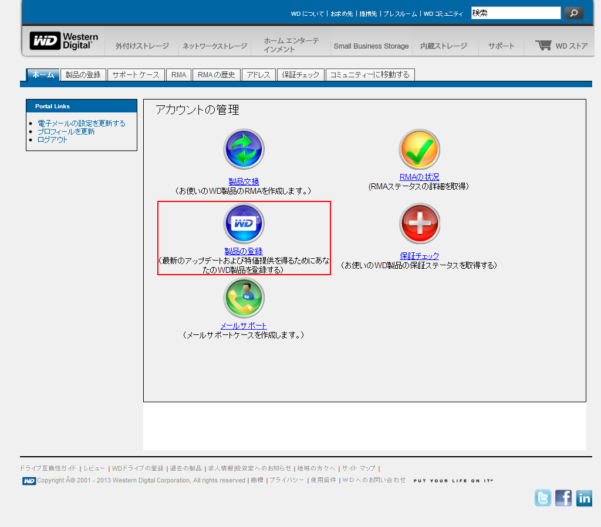
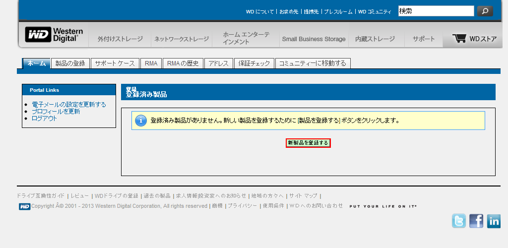
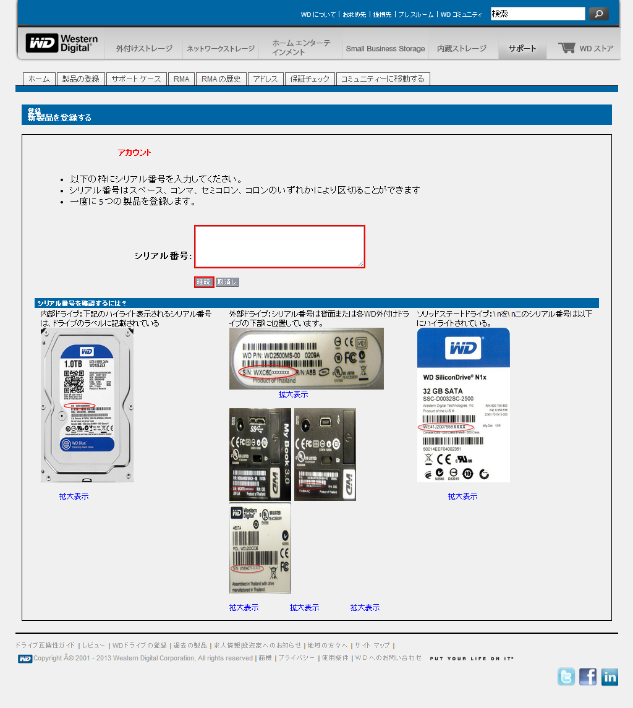
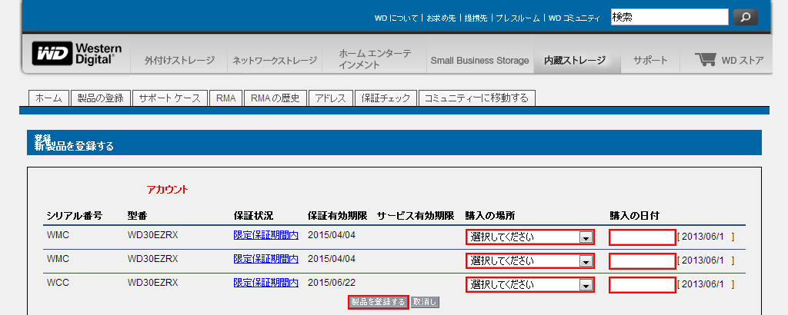
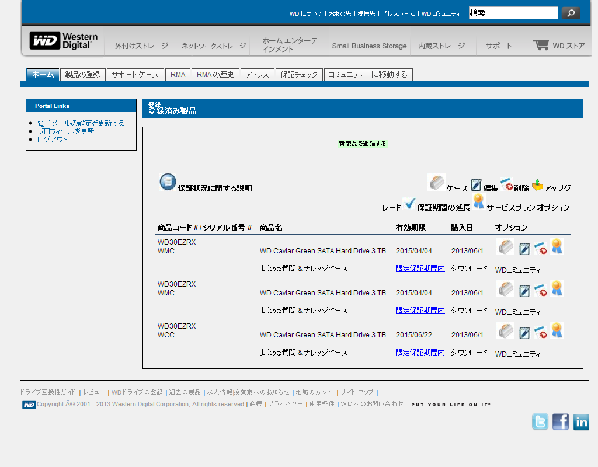

Western Digital (WD)製品のユーザ登録
はじめに
デジタルカメラの高解像度画像データやテレビ番組の録画データなど，HDDに記録するデータは大規模化する一方です． HDDメーカーも淘汰が進み，主要メーカーは片手で数えることが出来るほどになりました． ここでは大手HDDメーカーの1社であるWestern Digital (WD)社の製品のユーザ登録について解説します． メーカー，製品および販売形態によりますが，他のPCパーツと同様，HDDにも保証期間が設けられています． WD製品は，WD社のWebページ上のWD - サービスおよびサポートでユーザ登録と製品登録を済ませておくと， 簡単に手元のWD製品の保証有効期限を確認できるので便利です．
ユーザ登録する
WD製品の保証有効期限を調べるためには，WD - サービスおよびサポートでユーザ登録を行う必要があります． 「登録」をクリックして，ユーザ登録を開始します．

Webページは機械翻訳された日本語がベースになっているようで，所々日本語表現がおかしいです． そのうち改善されるのではないかと思いますが，現状でも何とか理解できるレベルです． 「ここをクリック」をクリックします．
{kind=link}
赤色でマークされている必須情報を記入し，「投稿」をクリックします． 日本語ではなく，英語で記入するようにしてください．
「メールサービスの設定」は任意ですが，ダイレクトメール類は目を通さないので面倒だと思う方は，全てのチェックボックスにチェックを入れてください． この設定は後からでも変更可能です．
{kind=link}
以上で，ユーザ登録が完了しました．
製品を新規登録する
HDDは，購入してPCに取り付けた後に，取り外すことは滅多にないと思います． 保証有効期限を確認するためにはHDDのシリアル番号が必要ですので， 購入後すぐにWD - サービスおよびサポートにシリアル番号を登録しておくと問題発生時にすぐに確認できます．
WD - サービスおよびサポートにログインし，「製品の登録」に移動します．
{kind=link}
「新製品を登録する」をクリックします（これは，恐らく，「製品を新規登録する」という意味でしょう．）
{kind=link}
HDDなどのWD製品のシリアル番号を入力し，「継続」をクリックします．
{kind=link}
必要事項を入力し，「製品を登録する」をクリックします．
{kind=link}
製品の新規登録が完了しました．登録した製品の一覧が閲覧できます．
{kind=link}
これで，もしもHDDが故障するような事態が発生しても，すぐにWD製品の保証有効期限を確認することができます． 保証有効期限内であれば，WD - サービスおよびサポート上から無償交換手続きが可能です．